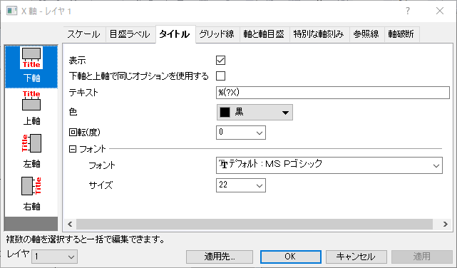

- 複数レイヤのグラフでは、複数レイヤグラフのレイヤ切り替えにレイヤリストを使用できます。
- このダイアログの下部にある適用先...ボタンをクリックして適用先ダイアログを開き、軸のフォーマットを適用元の軸から適用先の軸に適用します。
このタブでは、軸のタイトルのスタイル、位置などを編集します。2Dグラフでは、上/下（左/右）方向で、3Dグラフでは、3方向（X、Y、Z) で個別に編集できます。
|  |
| 2Dグラフの一般軸タイトル |
|
各方向のタイトルを表示します。
(2Dグラフのみ)このチェックボックスを使用すると、下と上（左と右）軸で同じオプションを使用します。このボックスにチェックが入っていると下軸と上軸（左軸と右軸）の設定が共有されます。下と左の軸だけを変更すれば、その設定が上と右にも反映されます。
軸タイトルのデフォルトは、 %(?X)、%(?Y) 、%(?Z)です。これは、指定されたプロットのY列の「ロングネーム（なければショートネーム）+X、YまたはZの単位」を表示します。プロットインデックスは通常1（レイヤの第一プロット）ですが、作図の詳細: 凡例/タイトル: 自動軸タイトルのプロットインデックスで他のプロットインデックスを指定できます。
軸のタイトルは、ワークシート列ラベル行情報の任意の組み合わせを使用して作成できます。例えば、X列の第一ユーザ定義パラメータの値を使用するには、 %(?X, @LD)を入力します。ロングネームと第一ユーザ定義パラメータを組み合わせて使う場合、%(?X, @(@LL (@LD)))を入力します。詳細は@オプションの完全なリスト を参照してください。
カスタマイズをテンプレートファイルに保存する場合は、上記の表記法を使用することをお勧めしますが、（a）このテキストボックスに軸タイトルテキストを入力するか、（b）グラフページの軸タイトルオブジェクトに直接入力することもできます。
このフィールドに4文字のUnicode 16進数値を直接入力し、ALT + Xを押して文字を軸のタイトルに挿入することができます（例： |
単位表示の制御については、軸タイトルの単位表示を参照してください。
このドロップダウンリストから、タイトルテキストの色を選択します。
Note: 軸タイトルを右クリックしてプロットに従ったテキスト色を選択することにより、軸タイトルの色をプロットに従うように設定することもできます。どのプロットの色に従うかについては、軸タイトルの置換を確認する必要があります。
タイトルを回転できます。このテキストボックスで正の値を選択または入力するとタイトルを反時計回りに回転します。時計回りに回転する場合は負の値を入力します。
軸に沿った軸タイトルの位置を指定します。軸開始から開始、軸開始で終了、中間、軸終了で終了、軸終了から開始 のオプションを含みます。
Note：page.ytitle= コマンドを使用すると、軸の枠に基づいて全てのレイヤの軸タイ トルのオフセットを調整できます。page.ytitle = 15 はレイヤ枠から15%（レイヤ枠の幅）という意味になります。
ドロップダウンリストからフォントを選択します。
コンボボックスにて軸のタイトルサイズを指定します。
デフォルトの位置からのタイトルのオフセットを指定します。テキストボックスに、軸の長さに対するパーセント値を入力します。タイトルを軸から遠ざける場合は正の値、軸を軸に近づける場合は負の値を指定します。
デフォルトの位置からのタイトルのオフセットを指定します。テキストボックスに、軸の長さに対するパーセント値を入力します。正の値を指定すると、タイトルが軸に沿って正の方向に移動します。負の値を指定すると、軸に沿って負の方向に移動します。